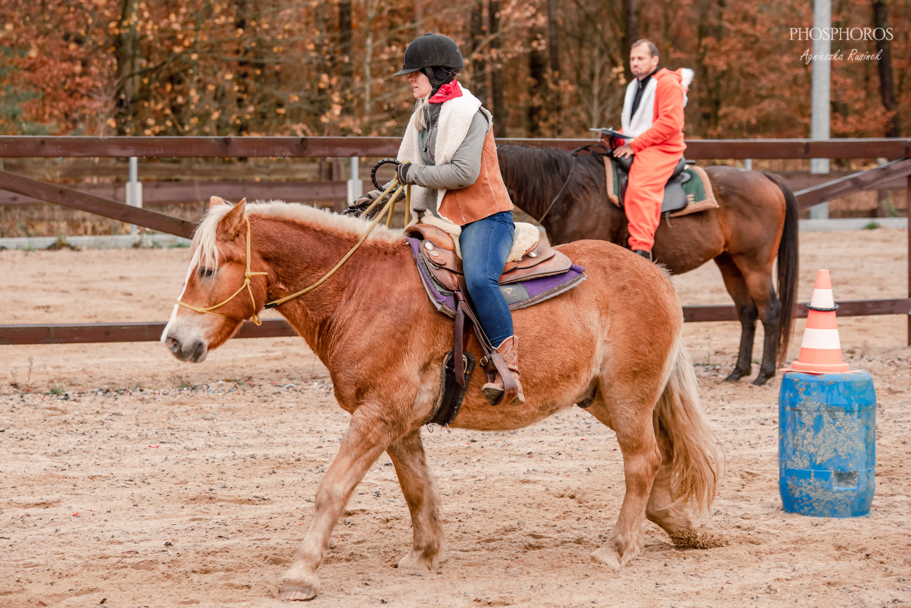
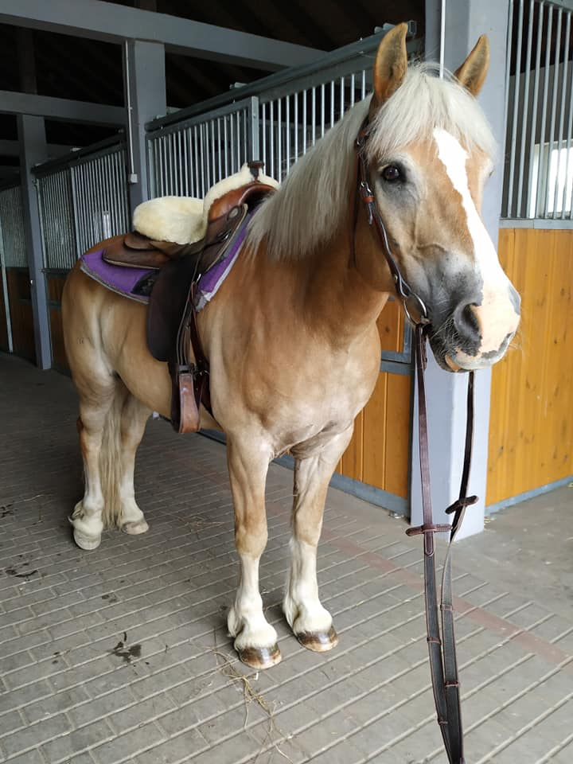

<!DOCTYPE html>
<html lang="en">

<head>
    <meta charset="UTF-8">
    <meta http-equiv="X-UA-Compatible" content="IE=edge">
    <meta name="viewport" content="width=device-width, initial-scale=1.0">
    <title>Document</title>
</head>
<style>
    html {
        margin: 0;
        box-sizing: border-box;
    }

    .post-title {
        font-family: Arial, Helvetica, sans-serif;
        font-size: 40px;
        text-align: center;
        background-color: violet;
        border: 3px solid black;
        border-radius: 10px;
        padding: 10px;
    }

    .post-content {
        font-family: Arial, Helvetica, sans-serif;
        font-size: 20px;
        background-color: rgb(136, 233, 71);
        border-radius: 5px;
        padding: 20px;
    }

    .image {
        height: 500px;
        border-radius: 10px;
        margin: 10px;
    }

    div div {
        display: flex;
        flex-direction: column;
        justify-content: space-around;
        align-items: center;
        background-color: beige;
        width: 80%;
        height: 80%;
        border-radius: 10%;
        margin: 10px;
        padding: 10px;
    }
</style>

<body>

    <div id="app"></div>


    <script src="https://unpkg.com/react@17.0.2/umd/react.production.min.js"></script>
    <script src="https://unpkg.com/react-dom@17.0.2/umd/react-dom.production.min.js"></script>
    <script src="https://unpkg.com/babel-standalone@6.26.0/babel.min.js"></script>
    <script type="text/babel">

        // const data = {
        //     title: 'Haflinger',
        //     description: 'Rasa konia, skonsolidowana w Tyrolu pod koniec XIX wieku. Charakteryzuje się dużą dzielnością w terenie górzystym, jednakże równie dobrze nadaje się do pracy pod siodłem. Haflingery są najwyższymi kucami o mocno rozwiniętym tułowiu, suchych kończynach oraz rozłupanym zadzie. Przedstawiciele tej rasy stosunkowo późno dojrzewają (używa się ich do pracy w wieku 3,5 roku), są długowieczne i łagodne. Konie te są hodowane w krajach europejskich oraz w Stanach Zjednoczonych i Turcji. Osiągają wysokość w kłębie: 140-155 cm i masę ciała: 400-500 kg. Umaszczenie: kasztanowate, ciemnokasztanowate z konopiastą grzywą i ogonem. Na świecie pogłowie tej rasy ocenia się na ok. 250 tys. sztuk',
        //     imgSrc1: './3.jpg',
        //     imgSrc2: './1.jpg'
        // };

        const PutHtwo = (props) => <h2 className="post-title">{props.name}</h2>

        const PutParagraph = (props) => <p className="post-content">Rasa konia, skonsolidowana w Tyrolu pod koniec XIX wieku. Charakteryzuje się dużą dzielnością w terenie górzystym, jednakże równie dobrze nadaje się do pracy pod siodłem. Haflingery są najwyższymi kucami o mocno rozwiniętym tułowiu, suchych kończynach oraz rozłupanym zadzie. Przedstawiciele tej rasy stosunkowo późno dojrzewają (używa się ich do pracy w wieku 3,5 roku), są długowieczne i łagodne. Konie te są hodowane w krajach europejskich oraz w Stanach Zjednoczonych i Turcji. Osiągają wysokość w kłębie: 140-155 cm i masę ciała: 400-500 kg. Umaszczenie: kasztanowate, ciemnokasztanowate z konopiastą grzywą i ogonem. Na świecie pogłowie tej rasy ocenia się na ok. 250 tys. sztuk</p>

        const PutImage = () => 

        const PutThemToghether = () => (
            <div>
                <PutHtwo name="Haflinger" />

                <PutParagraph />

                <PutImage />

            </div>
        )
        ReactDOM.render(PutThemToghether(), document.getElementById('app'));


        // const Paragraph = () => <p>Test</p>

        // const customHeader = () => <h2 className="post-title">Haflinger</h2>

        // const customParagraph = () => <p className="post-content">Rasa konia, skonsolidowana w Tyrolu pod koniec XIX wieku. Charakteryzuje się dużą dzielnością w terenie górzystym, jednakże równie dobrze nadaje się do pracy pod siodłem. Haflingery są najwyższymi kucami o mocno rozwiniętym tułowiu, suchych kończynach oraz rozłupanym zadzie. Przedstawiciele tej rasy stosunkowo późno dojrzewają (używa się ich do pracy w wieku 3,5 roku), są długowieczne i łagodne. Konie te są hodowane w krajach europejskich oraz w Stanach Zjednoczonych i Turcji. Osiągają wysokość w kłębie: 140-155 cm i masę ciała: 400-500 kg. Umaszczenie: kasztanowate, ciemnokasztanowate z konopiastą grzywą i ogonem. Na świecie pogłowie tej rasy ocenia się na ok. 250 tys. sztuk</p>

        // const customImage = () => 

        // const App = () => (
        //     <div>
        //         <customHeader />
        //         <customParagraph />
        //         <customImage />
        //     </div>
        // )

        // ReactDOM.render(App(), document.getElementById('app'));


        // return
        //     putHtwo(),
        //     putParagraph(),
        //     putImage(),
    </script>


</body>

</html>